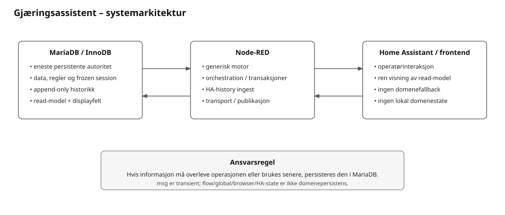
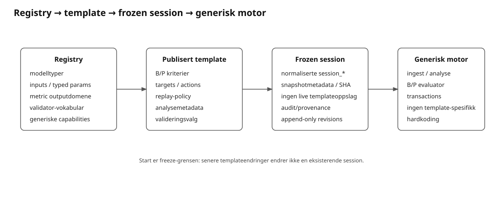
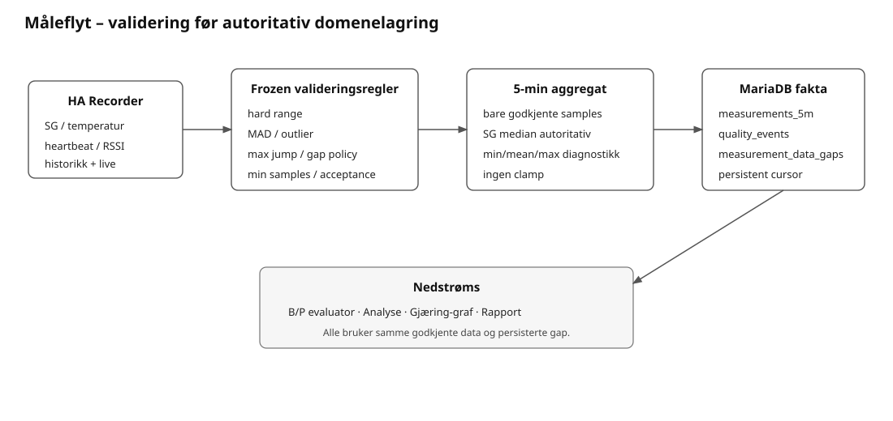
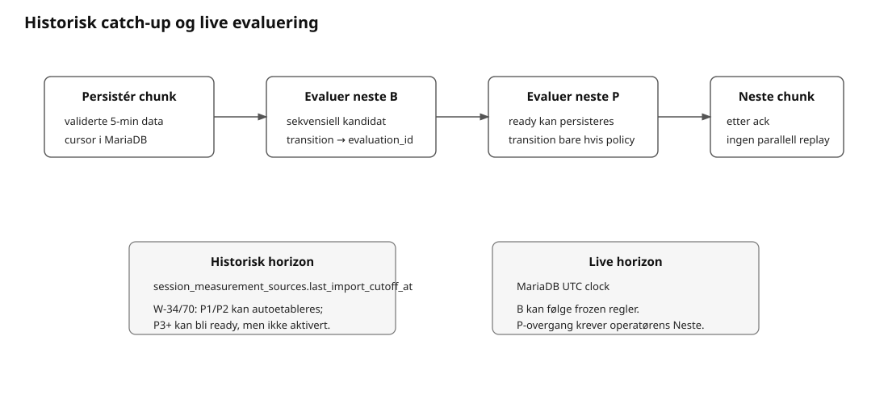

Rolle: Hovedinngang til gjeldende arkitektur, ansvar og dataflyt.

MariaDB = data, regler, read-model og ferdig presentasjonsinnhold
Node-RED = generisk motor, orchestrering, integrasjon og transport
Home Assistant/frontend = operatørinteraksjon og visningflow.*, skrivbar global.*, browser-state,
HA-state og runtimefiler skal ikke være nødvendig domenepersistens.
MariaDB registry
↓ tillatte generiske modeller, inputs og typed parametere
Publisert template
↓ konkret regelvalg, B/P, targets, validering og analysemetadata
Start
↓ atomisk freeze
Normalisert session-plan
↓
Node-RED generisk evaluator/ingest/analyse
↓
Persistente facts, evaluations, transitions og analysis_series
↓
MariaDB read-models
↓
HA/frontendUgyldig eller manglende frozen regelgrunnlag er konfigurasjons-/datagrunnlagsfeil. Motoren skal ikke reparere dette med skjulte defaults.

HA Recorder-history / live history
↓
source/session-frozen validation rules
↓ forkast ugyldige prøver; ingen clamp
robust 5-min aggregat
↓
measurements_5m + measurement_ingest_quality_events
↘ measurement_data_gaps
↓
B/P evaluator + AnalyseHeartbeat avgjør kildekontinuitet. Datagap persisteres eksplisitt og
bryter persistens, grafer og andre regler som krever sammenhengende
datadekning.
session_measurement_sources.last_import_cutoff_at er
persistent importcursor; omstart leser cursor fra MariaDB og henter
manglende periode fra HA Recorder.
Uten aktiv reell session startes ingen periodisk HA-history-import.

Historisk catch-up sekvenseres:
persistér 5-min chunk
→ evaluer neste B-kandidat
→ evaluer neste P-kandidat
→ persister result/evidence/evt. tillatt transition
→ neste chunkHistorisk evalueringshorizon er persistert importcutoff. Live-horizon er MariaDB UTC-klokke.
B-progresjon er sekvensiell. P-kriterier kan vurderes historisk, men
overgang persisteres automatisk bare når frozen
historical_replay_auto_transition_allowed er sann for
akkurat neste steg. Ordinære/live P-overganger er operatørbekreftet.
En persistert transition peker på eksakt evaluation_id.
Historisk overgangsbevis og current candidate-evaluering er derfor
separate read-model-fakta.
Om en beregnet verdi skal ha graf, og hvordan den behandles/presenteres, ligger i template/sessionmetadata. Motor og frontend skal ikke ha graph-ID-spesifikke branches.
P24r7 persisterer kun ordinære analysepunkter når frozen
minstegrunnlag, gapkrav, inputdomene og outputdomene er gyldige. Gyldige
punkter persisteres append-only i analysis_series_values;
manglende grunnlag skaper ikke syntetiske nullverdier.
persistente fakta + frozen regler
↓
generisk motor persisterer resultat/provenance
↓
MariaDB views lager ferdige value/status/display-felt
↓
Node-RED transport
↓
HA/custom cardFrontend kan escape tekst, styre layout, holde ekspandert UI-state og beregne pixelkoordinater for tegning. Frontend skal ikke beregne FG-fremdrift, kriteriestatus, datavindu, alder, targets, gap, anbefaling eller annen domenesemantikk.
HA entity/event-kontrakten ligger i MariaDB-registre og fysisk Node-RED-flow. Bootstrap, HA-avstemming, Systemkontroll og generert kontrakt leser samme metadata. Inputbindinger og select-mappings ligger i DB; manglende mapping er konfigurasjonsfeil, ikke anledning til lokal fallback.
system_functions, information_objects og
function_information_dependencies eier maskinlesbar
funksjon↔︎informasjon-lineage. Produsent→objekt→konsument er avledet
view, ikke separat sannhet.
Uncaught Gjæringsassistent-feil går gjennom en generell
catch/safety-net til technical_events når persistensbanen
er tilgjengelig. Spesifikke feilbaner kan supplere dette. Systemkontroll
og Teknisk-fane leser persistert teknisk grunnlag; de skal ikke opprette
en alternativ sensor-/runtimeautoritet.
Persistent maskintid er UTC. Operative displaytider forberedes i
read-model når de er del av domenepresentasjonen.
MariaDB-/Node-RED-klokkesammenligning skal ikke avhenge av tvetydig
lokal DATETIME-parsing.
Konsistens håndheves i denne rekkefølgen: normalisert datamodell → PK/FK/UNIQUE/CHECK → atomisk transaksjon → append-only fakta/revisions → views/read-model → applikasjonsvalidering/presentasjon.
REQ / DEC / VER / TEST metadata
+
append-only TECH/FUNC/UAT-resultater
↓
MariaDB verification views
↓
Node-RED transport/kommando
↓
HA Verifikasjon / Teknisk sammendrag
↓
JSON + HTML-eksport fra samme DB-grunnlagUAT er en ordinær stateful operasjon: HA-event → validering mot registrert UAT-test → kort DB-transaksjon → append-only run/result → ny read-model. Feil i verifikasjonsmetadata/status rettes i databasen/kilden; frontend eller Node-RED skal ikke fylle inn antatte relasjoner eller status.
MariaDB, Node-RED og Home Assistant må behandles som uavhengige moduler som kan starte, stoppe og koble seg til igjen i vilkårlig rekkefølge. MariaDB er fortsatt eneste persistente domenekilde.
Node-RED kjører en idempotent, read-only restore/reconcile mot
MariaDB med periodisk retry. Reconcile republiserer gjeldende DB-state,
men oppretter ikke nye biologiske evalueringer eller
prosesstransisjoner. Home Assistant-historikkimport har egen retry ved
utilgjengelig HA og fortsetter fra den persistente MariaDB-cursoren.
Identiske infrastruktursvikt dedupliseres i
technical_events slik at en frakoblet modul ikke genererer
en feilstorm i databasen.
Pitchtemperatur er ikke et separat startfelt; første manuelt målte temperatur er temperaturgrunnlaget ved pitch. Pre-start-kladd skal ikke republiseres periodisk til redigerbare HA-felt mens operatøren skriver; restore retries ved faktisk MariaDB-utilgjengelighet i stedet for periodisk overskriving.
MariaDB utleder effektiv beredskap, kriterietellinger, fasevarighet, valgbare handlinger og status-/anbefalingstekst. Den generiske evalueringsmotoren bruker frozen DB-policy og persisterer evalueringen før presentasjon. Node-RED transporterer den ferdige read-modelen, validerer kontrakt og utfører forespurte DB-operasjoner. Ingen egen tabell med HA-valg/defaults eller alternativ beredskapsberegning skal overstyre DB-projeksjonen.
Fysiske HA-koblinger kontrolleres mot
ha_projection_routes; felt kontrolleres mot
ha_projection_fields. Avvik skal bli synlige og rettes ved
sin autoritative kilde.
MariaDB projiserer en felles grafkontrakt gjennom
v_graph_definitions, v_graph_series,
v_graph_axes, v_graph_axis_ticks,
v_graph_time_markers, v_graph_latest og
v_graph_reference_bands. SQL-adaptere kobler de
normaliserte måle-, sammenlignings-, observasjons- og planfakta til
metadataenes kildetyper. Den eksisterende metrikkevaluatoren utfører kun
DB-valgte beregningsmodeller og lagrer resultatene i MariaDB.
tools/graph_renderer.js er eneste SVG-tegner.
Byggverktøyet inkluderer identisk kilde i dashboard og begge
rapportprodusenter; rapportmodulen bruker samme kildefil. Ingen separat
tegner for målegrafer eller rapporter beholdes. Node-RED transporterer
DB-kontrakten uten egne standarddata. Eldre arkivkontrakter konverteres
ved import før commit, uten å påvirke aktiv gjæring.